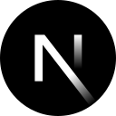
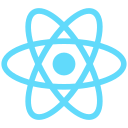
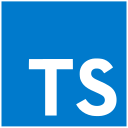
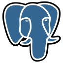

Custom Website
Website yang dirancang untuk kebutuhan bisnis, mulai dari company profile hingga website dengan fitur dan alur khusus.
Detail layanan →OOS NEXA membantu bisnis membangun website & web development, sistem bisnis & custom web app, e-commerce, serta integrasi & automasi sesuai kebutuhan yang benar-benar terjadi di lapangan. Kami tidak memaksa workflow bisnis mengikuti software yang sudah jadi. Sistemnya yang kami sesuaikan dengan cara bisnis Anda bekerja.
Tidak semua bisnis membutuhkan sistem yang sama. Karena itu, kami mulai dari kebutuhan dan proses kerja Anda, lalu menentukan solusi yang memang diperlukan.
Website yang dirancang untuk kebutuhan bisnis, mulai dari company profile hingga website dengan fitur dan alur khusus.
Detail layanan →Kelola transaksi, stok, produk, dan laporan toko dari satu sistem tanpa harus mencatat semuanya secara terpisah.
Detail layanan →Satukan data penting bisnis dalam satu tampilan agar informasi lebih mudah dipantau dan digunakan untuk mengambil keputusan.
Detail layanan →Bangun toko online dengan katalog, checkout, pembayaran, dan pengelolaan pesanan yang disesuaikan dengan kebutuhan bisnis.
Detail layanan →Kelola data pelanggan, riwayat transaksi, follow-up, dan informasi customer dalam satu sistem yang lebih terstruktur.
Detail layanan →Bangun web app dengan fitur dan workflow khusus ketika kebutuhan bisnis tidak cocok dengan software yang sudah tersedia.
Detail layanan →Hubungkan sistem yang berbeda agar data dapat berpindah otomatis dan pekerjaan yang berulang tidak perlu dilakukan secara manual.
Detail layanan →Halaman khusus untuk memperkenalkan layanan, produk, atau campaign dengan informasi yang fokus pada satu tujuan.
Detail layanan →Temukan layanan yang paling sesuai dengan kebutuhan bisnis Anda dan lihat bagaimana setiap layanan dapat diterapkan pada workflow yang berbeda.
Lihat semua layanan →Data terus bertambah, tetapi file semakin sulit dikelola dan dipantau.
Informasi bisnis berada di spreadsheet, WhatsApp, email, dan berbagai tools yang berbeda.
Data yang sama harus dipindahkan dari satu tempat ke tempat lain.
Jumlah stok di satu tempat berbeda dengan kondisi sebenarnya.
Tim harus mengumpulkan dan merapikan data terlebih dahulu sebelum laporan bisa digunakan.
Riwayat transaksi dan komunikasi pelanggan tidak tersusun dalam satu alur.
Masalah seperti ini biasanya bukan karena bisnis Anda terlalu rumit. Sistem yang digunakan memang belum mengikuti alur kerja yang ada. Kami membantu merapikan proses tersebut melalui website, sistem bisnis, e-commerce, integrasi, dan automasi yang dibuat sesuai kebutuhan.
Lihat bagaimana prosesnya →Kami bekerja dengan kebutuhan yang berbeda-beda. Fokusnya bukan pada jenis bisnis tertentu, tetapi pada proses kerja yang memang membutuhkan sistem.
Untuk toko yang masih mencatat transaksi dan stok secara manual atau menggunakan beberapa tools yang tidak saling terhubung.
Untuk bisnis yang membutuhkan toko online, pengelolaan pesanan, katalog, pembayaran, atau integrasi dengan sistem internal.
Untuk tim yang membutuhkan dashboard, database terpusat, workflow internal, atau sistem khusus untuk mengelola proses bisnis.
Untuk kebutuhan seperti registrasi, pengelolaan data, dashboard, atau sistem web yang membutuhkan alur kerja khusus.
Kalau proses bisnis Anda punya aturan dan kebutuhan yang spesifik, pendekatannya juga tidak harus menggunakan sistem yang seragam.
Konsultasikan kebutuhan bisnis Anda →Setiap project dimulai dari kebutuhan yang berbeda. Berikut beberapa contoh pekerjaan yang bisa Anda lihat untuk memahami jenis sistem yang kami bangun.
Sistem rental mobil yang membantu mengelola kebutuhan operasional rental melalui sistem berbasis web.
Toko online menswear muslim dengan kebutuhan katalog dan alur e-commerce yang disesuaikan dengan bisnis.
Dashboard registrasi mahasiswa yang dibangun untuk membantu proses pengelolaan dan pemantauan data registrasi.
Sistem manajemen toko laptop yang mencakup kebutuhan POS, stok, dan laporan dalam satu sistem.
Project di atas menunjukkan satu hal: kebutuhan setiap bisnis bisa berbeda. Karena itu, kami tidak menggunakan satu bentuk sistem untuk semua kebutuhan.
Lihat project yang pernah kami kerjakan →Kami memahami proses yang berjalan terlebih dahulu sebelum menentukan fitur dan struktur sistem. Tujuannya agar sistem mengikuti kebutuhan operasional, bukan sebaliknya.
Tidak semua bisnis membutuhkan fitur yang sama. Sistem dapat dirancang berdasarkan proses, data, dan kebutuhan khusus yang memang diperlukan.
Kebutuhan dibahas, dianalisis, dikembangkan, diuji, lalu disiapkan untuk digunakan dalam satu rangkaian proses.
Kami tidak memaksakan fitur hanya karena sudah tersedia dalam sebuah paket. Scope ditentukan berdasarkan kebutuhan project.
Bagi kami, sistem yang baik bukan yang punya fitur paling banyak. Sistem yang baik adalah sistem yang benar-benar membantu pekerjaan yang perlu dilakukan.
Kenali OOS NEXA lebih lanjut →Teknologi dipilih berdasarkan kebutuhan setiap project agar sistem tetap cepat, stabil, dan mudah dikembangkan. Beberapa teknologi yang dapat digunakan antara lain Next.js, React, TypeScript, PostgreSQL, dan Supabase, sesuai kebutuhan sistem yang dibangun.

Next.js
React
TypeScript
PostgreSQLCeritakan bisnis, masalah, dan proses kerja yang ingin diperbaiki. Tidak perlu memahami istilah teknis.
Kami memetakan kebutuhan, workflow, data, dan fitur yang memang diperlukan.
Sistem dibangun berdasarkan scope dan struktur yang telah ditentukan.
Setiap bagian diuji untuk memastikan alur dan fungsi bekerja sesuai kebutuhan.
Sistem disiapkan dan ditempatkan pada environment yang sesuai agar dapat digunakan.
Masih belum yakin harus mulai dari mana? Tidak masalah. Tahap awal memang dimulai dari memahami kebutuhannya.
Mulai dari konsultasi →Biayanya tergantung scope dan kebutuhan project. Jumlah halaman, fitur, integrasi, kompleksitas workflow, dan kebutuhan teknis dapat memengaruhi ruang lingkup pengerjaan. Karena itu, kami menentukan kebutuhan terlebih dahulu sebelum membahas estimasi.
Kalau Anda membutuhkan estimasi, ceritakan dulu kebutuhan dan sistem yang ingin dibuat agar scope project dapat dipahami dengan lebih jelas.
Waktu pengerjaan tergantung kompleksitas dan scope project. Website sederhana tentu memiliki kebutuhan yang berbeda dengan sistem yang membutuhkan database, dashboard, integrasi, atau workflow khusus. Estimasi dibahas setelah kebutuhan cukup jelas.
Bisa, jika sistemnya memang dirancang dengan pengelolaan konten dari sisi admin. Struktur pengelolaannya akan disesuaikan dengan jenis website atau sistem yang dibangun dan kebutuhan tim yang menggunakannya.
Perawatan dapat dibahas sesuai kebutuhan project. Setelah sistem digunakan, kebutuhan update, perbaikan, pengembangan fitur, atau perubahan integrasi bisa berbeda untuk setiap bisnis.
Sistem custom dibuat mengikuti kebutuhan dan workflow bisnis tertentu. Software jadi biasanya sudah memiliki struktur dan fitur yang ditentukan sebelumnya. Jika proses bisnis Anda memiliki kebutuhan khusus, pendekatan custom dapat memberikan ruang penyesuaian yang lebih besar.
Mulai dengan menceritakan bisnis dan masalah yang sedang Anda hadapi. Tidak perlu menyiapkan spesifikasi teknis yang rumit. Kami bisa mulai dari memahami proses kerja Anda, lalu membahas bagian mana yang memang perlu dibuat atau diperbaiki.
Tidak ada harga paket yang dipaksakan untuk semua bisnis. Harga menyesuaikan kebutuhan dan kompleksitas project, termasuk fitur, jumlah halaman, integrasi, workflow, dan kebutuhan teknis lainnya.
Setiap project memiliki scope yang berbeda. Karena itu, estimasi lebih masuk akal setelah kebutuhan bisnis dan sistem yang ingin dibangun sudah dipahami.
Ceritakan kebutuhan Anda terlebih dahulu. Kami bantu memetakan scope project sebelum masuk ke estimasi.
Minta Estimasi ProjectTidak perlu tahu istilah teknis. Cukup jelaskan bisnis Anda, bagaimana prosesnya berjalan sekarang, dan bagian mana yang masih terasa merepotkan. Kami akan membantu melihat kebutuhan tersebut dari sisi sistem dan menentukan langkah yang masuk akal untuk dikerjakan.
Mulai dari masalahnya. Kita cari bentuk sistem yang paling masuk akal untuk bisnis Anda.